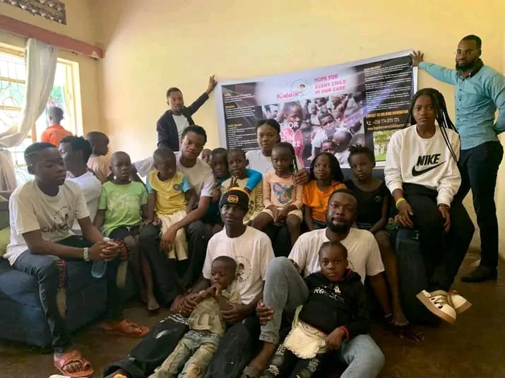
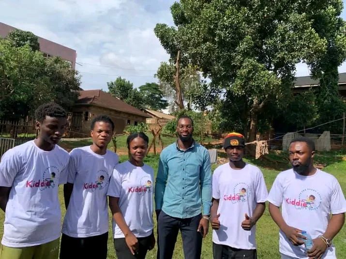
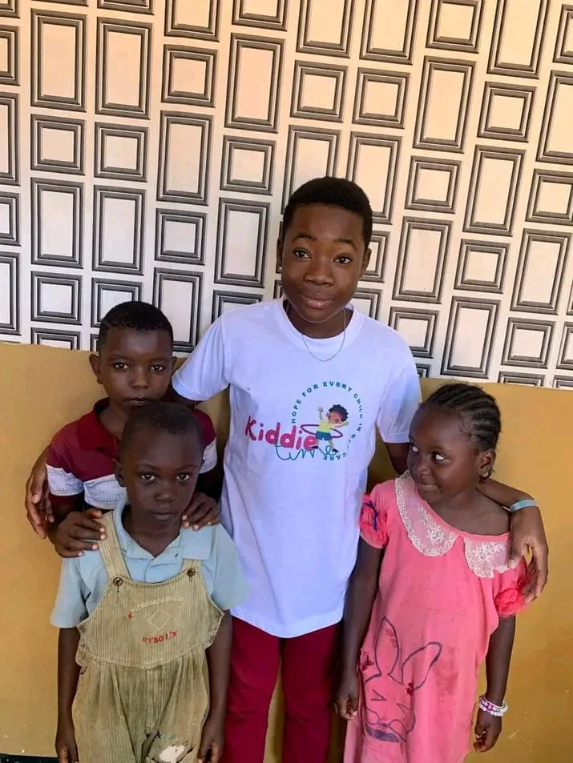
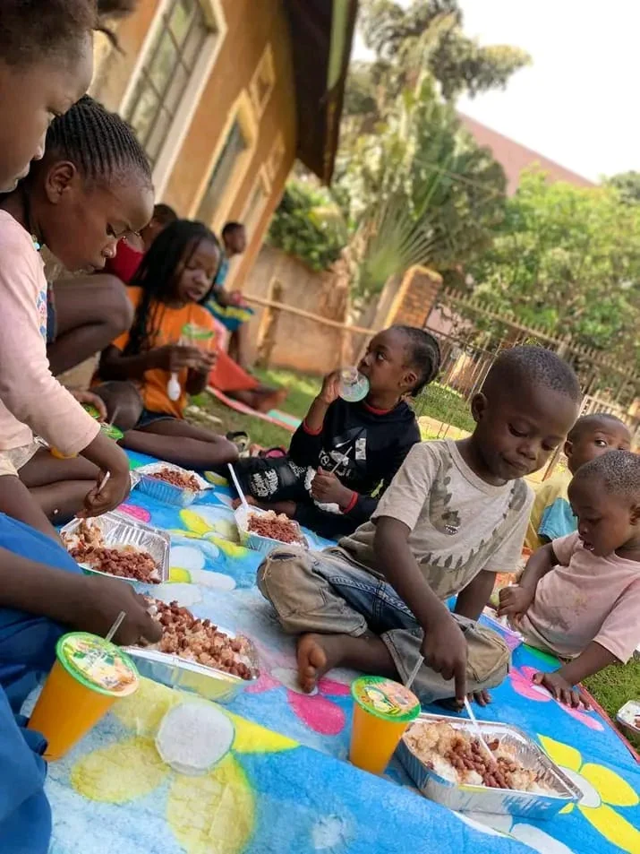
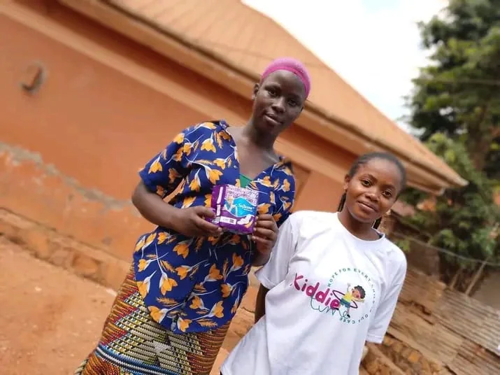
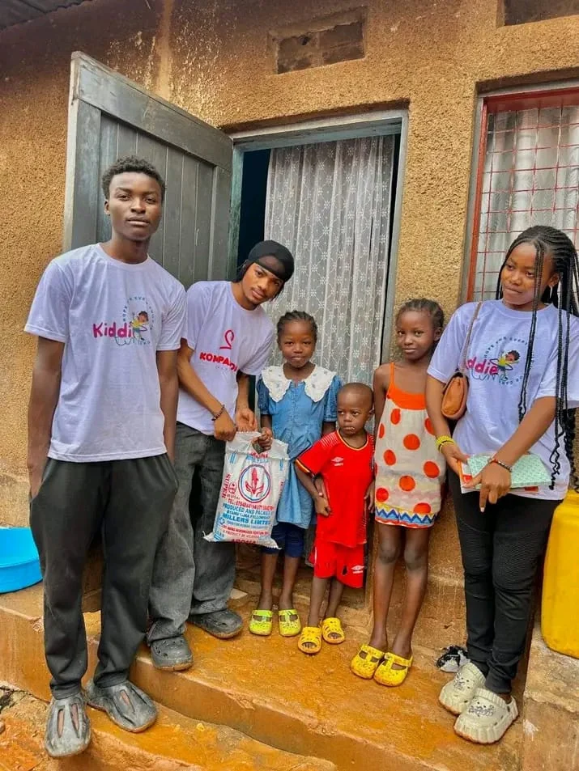
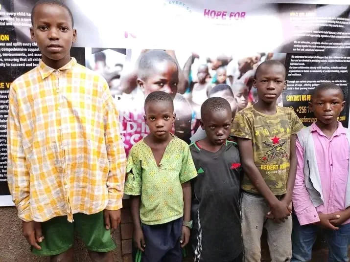
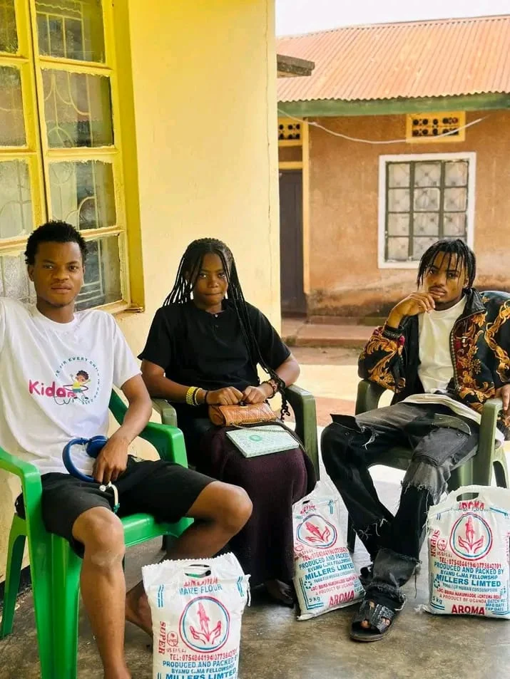
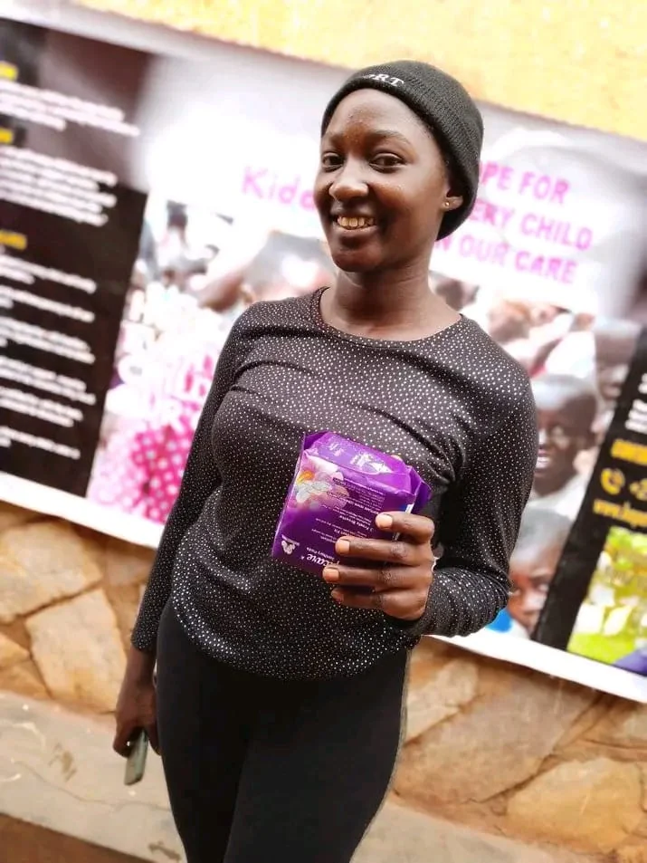

Nutrition & Essential Needs
Meals, food supplies and household essentials that help children and families face each day with greater stability.
Learn more →
We create spaces where children feel safe, valued and empowered — with practical support for nutrition, dignity, learning and family wellbeing.

Kiddie Care is a passionate team of advocates, caregivers, educators and community members committed to helping children access the support and resources they need to thrive.
We work alongside families, schools and local partners to create nurturing environments where children can feel safe, valued and empowered.
Meet the heart behind our work →Our work responds to the whole child — their wellbeing, learning, safety, dignity and sense of belonging.
Meals, food supplies and household essentials that help children and families face each day with greater stability.
Learn more →Learning encouragement, mentorship and practical resources that keep children connected to opportunity.
Learn more →Child-sensitive support that prioritizes safeguarding, trust and environments where young people can be heard.
Learn more →Age-appropriate hygiene and dignity support, including menstrual health assistance for girls and young women.
Learn more →Home visits, listening, referrals and practical collaboration with families and community networks.
Learn more →Positive role models, confidence-building experiences and encouragement for every stage of growing up.
Learn more →
“A world where every child has the opportunity to thrive, supported by a community that believes in their potential and well-being.”
To empower and uplift every child in our care by providing comprehensive support services, nurturing environments and access to essential resources, ensuring that all children have the opportunity to succeed and lead fulfilling lives.
Read our story
Food support creates a moment to connect, listen and remind every child that they belong.


Give, volunteer, partner or help tell the story. Every thoughtful action can become part of a child’s brighter future.



